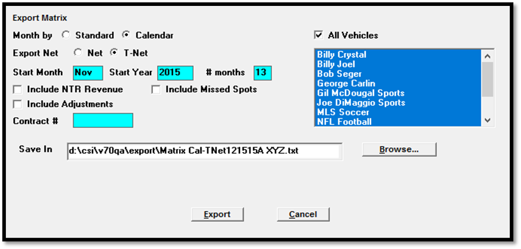
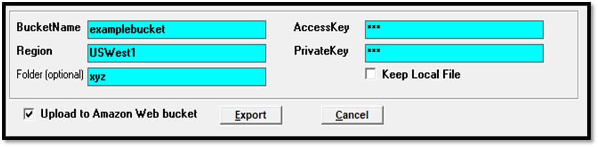

Matrix
The Matrix Export is a revenue export imported into the Matrix Media CRM and Sales Analytics Software. There are two methods of gathering invoicing information based on the type of calendar selected: standard broadcast calendar or by calendar month. If the standard broadcast calendar is selected, receivables from the past and contract projections from the future are obtained. If the calendar month is selected, all data is gathered from spots. Billing is assumed to be “As Aired” for Net or Triple Net amounts. A checkbox is also present to select whether to include or exclude invoice adjustments. The export creates a comma-delimited text file that can be imported into the Matrix CRM system.
Standard Broadcast Calendar rules:
- All dollar amounts in the future will be obtained from the contracts, as ordered.
- All dollar amounts in the past (prior to the last billed date) will be obtained from receivables/payment history, as invoiced. Invoice adjustments are included and may be a negative amount.
- The total of the Matrix export for the standard broadcast month should balance to the Billed and Booked T-Net option.
- If the Standard Broadcast Calendar Matrix export is the only enabled Matrix export, then by default the “include adjustments” checkbox will be checked on.
Calendar Month rules:
- All data comes from spots. If spots are moved to another vehicle, the dollar amounts will appear under the vehicle it is scheduled in.
- Missed, canceled, hidden, billboard and fill spots are ignored.
- All dollar amounts are assumed to be As Aired.
- The Total Direct column should balance to the Gross dollars from the Billed and Booked by Calendar Spots report, Revenue on the Books by Calendar spots, and Spot Business Booked by Calendar spots. Each must exclude missed/canceled spots (Matrix always excludes them). Gross Split Amount and Net Split Amount balancing cannot happen if any split salespeople exceed 100% Rev/Comm in the contract.
- If the Matrix-Calendar month option is enabled, then by default, the “include adjustments” checkbox will not be checked on. When run to include invoice adjustments, invoice adjustments are gathered using the same rules as the Billed and Booked report, Calendar versions: it includes invoice adjustments entered on or prior to the last day of the calendar month that final invoices have been run for.
Additional rules:
- The lowest level of detail would be vehicle within contract. There can be multiple records for the same contract fields due to vehicle and/or salespeople split data.
- PSA/Promo contracts are ignored.
- Orders that are part cash part trade will generate two records.
- One record for each split salesperson is generated per month, if applicable.
- The total month’s gross amount is placed in the first salesperson’s record, in addition to the splits for each salespeople on the order. For example, 3 salesperson share in the buy at 50%, 25% and 25. The month’s total gross $ total $1000. Salesperson 1’s share is $500, salesperson 2 & 3’s share is $250. In a separate column (Gross Direct), salesperson #1 will show $1000, salesperson 2 & 3 will show $0 in that column. Total Split $ will never exceed 100%, even though the contract allows Rev/Comm Share % to exceed 100%. This precludes any balancing of reports such as Billed and Booked, Spot Business Booked or Revenue on the Books.
- T-Net - determined by gross $ - agency commission – acquisition cost (from line) – merchandising – promotions.
- Amount field – acquisition amount (# spots * acquisition cost) is subtracted from the spot cost (# spots * spot cost)
- A Separate entry is shown for a Merchandising or Promotion transaction. The Gross field and Gross Split column will be blank, those bottom line totals are not affected. The T-Net field will be shown as a negative amount, to be subtracted from totals.
Setup
The export can be set up to run automatically or manually.
Site Options -> Options
You must turn the feature on in Lists -> Site Options, on the Options tab, in the System Options section. You will need a keycode from support@counterpoint.net.
Determine whether you will export your revenue on a Standard or Calendar month, or by both.
Matrix Standard: Receivables from the past and contract projections for the future are obtained.
Matrix Calendar: All data gathered and exported are from spots. If spots are moved to another vehicle, the dollar amounts will appear in the vehicle is it scheduled in; missed, cancelled, hidden, billboard, and fill spots are ignored; and all dollar amounts are assumed As Aired.
If Acquisition Cost is enabled, the export will calculate merchandising costs to arrive at a T-Net figure. If unchecked, merchandising will be ignored by Matrix.
In V7.1 and higher, the T-net acquisition figure will be exported if Barter is enabled in Traffic Site Options.
Vehicles -> Options -> Export
If the Matrix export is enabled in the Vehicles -> Options -> Export tab for any vehicle, then by default, only those vehicles will be pre-selected on the manual Matrix export screen, and included on the Matrix export when configured to run automatically. If no vehicles have it checked on, then all vehicles will be pre-selected and included on the automatic Matrix export.
When the export is generated from receivables or history, the airing vehicle is available for selection. For future contracts, selling, conventional, sports, and NTR vehicles are available for selection.
Automatic Setup
CSI Server Manager or Windows Task Scheduler can be configured to run the export automatically on a set schedule.
CSI Server Manager Setup
To set up the Matrix export to run automatically using the CSI Server Manager method, additional information needs to be added to the CSI_Server.ini file, and a new file called Exports.ini must also be created and placed in folder with the Traffic.INI file (typically the Data folder). The Matrix export can also be configured to run automatically with different parameters, for example, it is possible that both the broadcast and calendar versions need to be generated. This section describes all these steps in detail.
Add the Matrix information to the CSI_Server.ini file by first adding the name of the Matrix export to the SectionNames field near the top of the file. If only one set of parameters is being used, just add one Matrix name (for example, “Matrix”) to the SectionNames field. If there is more than one set of parameters that will need to be generated, define an additional name for the additional set of parameters. For example, in this case, Matrix1 and Matrix 2 could be added to the SectionNames field. See below for an example. (Note: in these examples, Matrix, Matrix1 and Matrix2 are being used for the SectionNames, but any unique name is allowable as long as it matches the name of the corresponding section later in the CSI_Server.ini file.)
After adding the SectionNames as described above, a new section must be added to the CSI_Server.ini for each set of parameters that will be generated. There are two examples below. The first example shows the fields that must be added when there is a single set of parameters being generated. The second example shows the fields that must be added when there are two sets of parameters being used.
CSI_Server.ini example with one set of export parameters
SectionNames = Matrix
...
...
[Matrix]
Enabled = 1
WeekDays = 1111111
StartTime = 6:00AM
Interval = 86400
Exe = x:\csi\prod\exe\Exports.exe
StartInFolder = x:\csi\prod\data
CommandLine = Auto-Matrix Section-Matrix Std Net
KeepProgramRunning = 0
- Matrix is shown in brackets. The name used here must match the name in the SectionNames field
- Enabled: can be set to 1 (enabled) or 0 (disabled).
- Weekdays: indicates the days of the week that the export will be generated for, in this case, every day of the week (1 = enabled, 0 = disabled).
- Start time: when the export should start running.
- Interval: the amount of time in seconds that should elapse before the next time it is run.
- Exe: should point to the exports.exe file.
- StartInFolder: should point to the folder where the Traffic.ini and Export.INI is located, typically the Data folder.
- CommandLine: must have the words Auto-Matrix followed by a space, followed by the word Section, followed by a unique name that will be used on the Exports.ini file (described below).
- KeepProgramRunning: should be set to 0.
Note: the entry "CommandLine" passes information to the application program, in this case it's Matrix. It passes Key parameters that the program looks for. If it finds the text "Auto-Matrix", then the program knows it's running automatically, and no questions should be displayed/asked. Then, the following text next to "Section-" tells the application program which words to looks for in exports.ini so it can also pick up the options that Matrix will be using (for example, is it to run Calendar or Std, it is to include NTR, etc.).
CSI_Server.ini example with two sets of export parameters
SectionNames = Matrix1, Matrix2
...
...
[Matrix1]
Enabled = 1
WeekDays = 1111111
StartTime = 6:00AM
Interval = 86400
Exe = x:\csi\prod\exe\Exports.exe
StartInFolder = x:\csi\prod\data
CommandLine = Auto-Matrix Section-Matrix Std Net
KeepProgramRunning = 0
[Matrix2]
Enabled = 1
WeekDays = 1111111
StartTime = 6:15AM
Interval = 86400
Exe = x:\csi\prod\exe\Exports.exe
StartInFolder = x:\csi\prod\data
CommandLine = Auto-Matrix Section-Matrix Cal Net
KeepProgramRunning = 0
- The first Matrix export will run at 6AM every day on Monday through Sunday.
- The second Matrix export will run at 6:15AM every day.
- The start times are staggered so the two exports are not run at the same time, as only one Matrix export can be run using this method at a time.
- Exe: should point to the exports.exe file.
- StartInFolder: should point to the folder where the Traffic.ini and Export.INI is located, typically the Data folder.
- CommandLine: must have the words Auto-Matrix followed by a space, followed by the word Section, followed by a unique name that will be used on the Exports.ini file (described below). Note that on this example, there are two different values in the CommandLines, as each set of parameters must have a unique name.
- KeepProgramRunning: should be set to 0.
Exports.INI
A file called Exports.ini must also be created and placed in same folder as the Traffic.INI, typically the Data folder. The csi_server.ini must be placed in the EXE folder. The Exports.ini file is used to specify the export parameters when it is automatically generated. There are two example Exports.ini files shown below, one is for use with the single export parameter setup, the other is for use with the multiple export parameter setup. In both examples, the name in brackets must match the name that appears after “Section-“ on the corresponding CommandLine on the CSI_Server.ini.
Exports.ini example with one set of export parameters
[Matrix Std Net]
Calendar=Std
Dollars=Net
Months=13
NTR=No
Missed=Yes
Adjustments=Yes
Export=x:\csi\prod\export
The example above is for when there is a single set of export parameters. The first section – in brackets – must match the name that appears after “Section-“ on the corresponding CommandLine on the CSI_Server.ini file, as described above. In this example, “Matrix Std Net” is shown, which corresponds to the name used in the CommandLine of the first CSI_Server.ini example earlier in this section.
- Calendar: This can be set to Std (Standard broadcast) or Cal (Calendar). If not found or invalid, Std is the default.
- Dollars: can be set to Net or TNet. If not found or invalid, Net is the default.
- Months: can be set to any number from 1 to 24. If this value is not entered or is invalid, it will default to 24.
- NTR: This can be set to Yes or No. If not found or invalid, Yes will be used.
- Missed: This can be set to Yes or No. This feature is tested for the Calendar method only. If not found or invalid, it will default to No
- Adjustments: This can be set to Yes or No. Yes will include invoice adjustments. No will exclude invoice adjustments.
- Export: Define the location where the export file should be created.
- StartMonth: an optional parameter, this can be set to a number between 1 and 12, with 1 for January, 2 for February, etc. When used, this setting makes the export always start from the specified month from the current year.
Exports.ini example with two sets of export parameters
[Matrix Std Net]
Calendar=Std
Dollars=Net
Months=13
NTR=Yes
Adjustments=No
Export=x:\csi\prod\export
[Matrix Cal Net]
Calendar=Cal
Dollars=Net
Months=6
NTR=No
Adjustments=No
Missed=No
Export=x:\csi\prod\export
In this example, there are two sections on the Exports.ini file. Each section is indicated in brackets and given a name that matches the second part of the corresponding command line from the CSI_Server.ini (detailed above), which in this case is Matrix Std Net and Matrix Cal Net. Any string of letters can be used here in brackets as long as it matches the second part of the CSI_Server.ini Command Line described above. It is recommended to use something like the example shown for the sake of clarity.
In this example, different parameters are used. The first section uses the Standard broadcast calendar and includes NTR, the second section uses calendar months, includes six months of data, and excludes NTR. Calendar months can include or exclude Missed spots through the Missed line. Missed can be set to Yes or No, if not found or invalid, it will default to No.
Different parameters can be used as needed when configuring these sections.
Testing the Automatic Export
A test export can be generated by altering the start time of one of the exports on the CSI_Server.ini to a time in the near future, saving the changes, allowing the export to execute, then retrieving the file from the specified export folder. Once the test is verified as being successful, restore the start time to the actual time at which the export is to run.
Task Scheduler setup steps
As an alternative to using the CSI_Server_Manager utility, the Matrix export can also be set up as a Windows Scheduled Task using Task Scheduler.
1. First create a new task in Task Scheduler.
2. Give it a name and specify when and how often it should be run on the Trigger section.
3. In the Actions section, set the Action to "Start a program".
4. Browse to the exports.exe (typically in csi\prod\exe) for the Program/Script.
5. Enter the command line information described above in the arguments field (using the example above, one argument would be Auto-Matrix Section-Matrix Std Net).
6. Browse to the location of the Traffic.ini for the Start In field, typically csi\prod\data.
7. Save the Scheduled Task.
Note that if using Task Scheduler, separate scheduled tasks must be set up for each set of Matrix parameters being used. This means following the example above, there would need to be two separate scheduled tasks set up, with one pointing to the Auto-Matrix Section-Matrix Std Net command line, and one pointing to Auto-Matrix Section-Matrix Cal Net command line.
Testing the Automatic Export
As a test, you can change the start time of the scheduled task to force it to run then retrieve the export file from the export folder specified on the Exports.ini file. After that test is successful, change the start time back to the intended start time of the export.
Manual Export Procedure
To generate the export manually, click on Task -> Export -> Matrix. The file is typically generated once a day. You can generate the file multiple times in one day if needed.

- Month By: If applicable, select the type of month to export.
- Based on your Site Options settings, you can either run the Matrix export by Standard Broadcast month, Calendar month, or both (separately).
- Standard: Receivables from the past and contract projections for the future are obtained.
- Calendar: All data comes from spots.
- Billing is assumed to be As Aired.
- If spots are moved to another vehicle, the dollar amounts will appear the under the vehicle in which it is scheduled
- Cancelled, hidden, billboard, and fill spots are ignored. Missed spots can be included or excluded as needed.
- Totals for the Matrix Calendar option cannot balance to the Billed and Booked T-net option due to packages. Those spots are reflected “As Ordered” in Billed and Booked, and “as Aired” in Matrix.
- Export Net or T-Net: Select to report revenue in Net or Triple Net (Net-Net) figures.
- T-Net figures are determined by subtracting the agency commission from the gross dollar value, then subtracting acquisition costs, then subtracting merchandising/promotions.
- Acquisition costs and applicable commissions are included in T-Net calculations.
- Separate entry is shown for a Merchandising or Promotion transaction.
- The T-Net field will be shown as a negative amount.
- Start Month, Start Year, Number of Months: Enter the start month, year and number of months (1-24).
- Include NTR Revenue: Decide whether to include NTR in the export.
- Include Missed Spots: If using Calendar month, missed spots can be included or excluded in the export.
- Include Adjustments: invoice adjustments can be included (by checking this checkbox) or excluded (by leaving it unchecked).
- Contract Number: You can run this for a specific contract if you wish, or leave it blank for all.
- Save In: The file is stored in the CSI\Prod\Export folder.
- Browse: Select if you wish to save the export to a different folder.
- Fill in all of the information, and click Export.
- The text “Export Matrix Successfully Completed” will appear after export is completed.
File Name
The file name is “MATRIX mmddyy ccccccc.TXT,” and it is stored in the Export folder defined in Traffic.ini
- mmddyy is the date the file is generated
- ccccccccccccccc is the client database name defined in Site Options
- If the file is generated multiple times on the same date, the next letter of the alphabet is appended to the date, starting with “A”; for example “Matrix 092611A ClientName.txt”
Data Examples
This example shows a 3 month schedule running Jan – Feb 2003 for $1,000.00 gross, and then March 2003 for 1050.50 gross, all for salesperson Joe Smith:
“KXYZ-AM”,”Hispanic Nationwide”,”Hispanic”,”XYZ”,”Hispanic”,”Media Hispanic”,”Rep”,”New York”,”Joe Smith”,”BBD&O”,”Sears”,”White Sale”,”S”,”C”,”A”,”Retail”,”Home Goods”,2003,1,1000,1000,850
“KXYZ-AM”,”Syndication Talk”,”Syndication”,”ABC”,”Hispanic”,” Media Hispanic”,”Rep””New York”,”Joe Smith”,”BBD&O”,”Sears”,”White Sale”,”S”,”C”,”A”,”Retail”,”Home Goods”,2003,2,1000,1000,850
“KXYZ-AM”,”NTR Genl Mkt”,”NTR”,”NTR”,”NTR”,” Media Genl Mkt”,”Rep”,”New York”,”Joe Smith”,”BBD&O”,”Sears”,”White Sale”,”S”,”C”,”N”,”Retail”,”Home Goods”,2003,3,1050.50,1050.50,892.93
Multiple Salespeople
This example shows a 1 Month schedule running Jan 2003 for $1000 gross, split 50-50 between Joe Smith and Jerry Schones. Only the primary salesperson has the total month’s amount. Any additional salespeople on the buy will be listed, but will have $0.
“KXYZ-AM”,”Hispanic Nationwide”,”Hispanic”,”XYZ”,”Hispanic”,” Media Hispanic”,”KRepatz”,”New York”,”Joe Smith”,”BBD&O”,”Sears”,”White Sale”,”S”,”C”,”A”,”Retail”,”Home Goods”,2003,1,1000,500,425
“KXYZ-AM”,”Syndication Talk”,”Syndication”,”XYZ”,”Hispanic”,” Media Hispanic”,”Rep””New York”,”Jerry Schones”,”BBD&O”,”Sears”,”White Sale”,”S”,”C”,”A”,”Retail”,”Home Goods”,2003,2,500,425
Matrix will only recognize up to 100% of commissionable revenue, so if a buy has a salespeople split that exceeds 100% of the revenue, only 100% will be exported. For example, if Salesperson A has 50%, Salesperson B has 50%, and Salesperson C has 25%, only A and B will be included on the export.
Verification
The file is stored in the x:\csi\prod\export directory. You can check the status of the export and where the file has been stored by selecting Accessories -> Messages. Select the Export – Matrix option to see the details of when the export was generated, what the selectivity was and where it was stored.
ExpMatrix.TXT
When running the export, if the system encounters an SSF error for a spot, a warning message will appear in the ExpMatrix.txt log file.
Example: ** Run SSFCheck for NFL Football for Spot ID 18272 on 11/2/15
If this happens when running the Matrix export, contact support@counterpoint.net.
Data Fields
This is a list of the data fields that can be exported from Counterpoint. Matrix does not require all data fields be defined.
|
Vehicle Name |
Name of vehicle |
|
|
Vehicle Group: Market |
Classification |
|
|
Vehicle Group: Research |
Classification |
|
|
Vehicle Group: Sub-Company |
Classification |
|
|
Vehicle Group: Format |
Classification |
|
|
Vehicle Group: Sub-Total |
Classification |
|
|
Sales Source Name |
Defined with the salesperson |
|
|
Sales Office Name |
Defined with the salesperson |
|
|
Salesperson Name |
Defined on the order/invoice |
|
|
Agency Name |
Defined on the order/invoice |
|
|
Advertiser Name |
Defined on the order/invoice |
|
|
Product Name |
Defined on the order/invoice |
|
|
Order Type |
Defined on the order: Standard=C, Reservation=V, Direct Response=R, Per Inquiry=Q (PSA and Promo are not included) |
|
|
Cash/Trade flag |
C or T |
|
|
Air Time/NTR flag |
A or N |
|
|
Primary Product Protection Code |
Defined on order |
|
|
Secondary Product Protection Code |
Defined on order |
|
|
Year |
Order/invoice |
|
|
Month |
Order/invoice |
|
|
Gross Direct |
Total gross revenue from order/invoice |
|
|
Gross Split Amount |
Used for split sales revenue from order/invoice |
|
|
Net or T-Net Split Amount |
Used for split sales revenue from order/invoice |
|
|
|
|
|
Export to Amazon Web Bucket
On version 7.1 and above, it’s possible to export the file to an Amazon S3 Web Bucket, when running the export manually or as a scheduled task.
Manual Export
When running the export manually, to have the export file get exported directly to an Amazon Web Bucket, check the “Upload to Amazon Web Bucket” checkbox. When this is checked on, additional fields will appear, as shown in the picture below, for configuring the web bucket information. The BucketName, AccessKey, Region, and PrivateKey must be entered. Note that these values are not saved when entered. If exports will be run regularly, use Task Scheduler to run the export, as that method allows the web bucket information to be saved on a special file (Exports.ini) and reused with each run of the report.

When “Keep Local File” is checked on, the export file will be saved in the Export folder, and exported to the web bucket. When “Keep Local File” is unchecked, then the local file will be deleted after the upload to the web bucket is successful.
Automatic Export
The automatic export can also be configured to send the export file automatically to an Amazon S3 Web Bucket by adding the following additional fields to the Exports.ini for the automated export:
BucketName: The name of the Amazon bucket you wish to upload the exported file to.
BucketFolder: If the file should be uploaded to a sub-folder of the bucket, specify it here. The folder name is case sensitive, and the folder name entered must match the actual bucket folder name. If there’s a typo, it will either fail to successfully upload or create a new folder. Spaces, commas, ampersands, and underlines are okay to use in the folder name. Slashes and the vertical bar symbol are not allowed. The BucketFolder parameter is optional. If not specified, the file will be uploaded to the root folder of the bucket.
Region: Enter the AWS Region the Amazon bucket was created in. Supported regions: AFSouth1, APEast1, APNortheast1, APNortheast2, APNortheast3, APSouth1, APSoutheast1, APSoutheast2, CACentral1, CNNorth1, CNNorthWest1, EUCentral1, EUNorth1, EUSouth1, EUWest1, EUWest2, EUWest3, MESouth1, SAEast1, USEast1, USEast2, USGovCloudEast1, USGovCloudWest1, USWest1, USWest2
AccessKey: A long term credential for an IAM user or the AWS account root user, used to authenticate requests to AWS.
PrivateKey: A long term credential for an IAM user or the AWS account root user, used to authenticate requests to AWS.
KeepLocalFile: Can be set to Yes or No. Defaults to No if not set. A setting of Yes will retain the local file in the export path specified. A setting of No will delete the local file after a successful upload to AWS.
Note: the Amazon bucket settings (BucketName, Region, AccessKey, PrivateKey, KeepLocalFile) are optional, but if the web bucket will be used, then all settings must be entered correctly, with the exception of BucketFolder and KeepLocalFile, which are entirely optional.
Exports.ini example with Amazon Bucket Section added:
[Matrix Std Net]
Calendar=Std
Dollars=Net
Months=13
NTR=No
Missed=Yes
Adjustments=Yes
Export=x:\csi\prod\export
BucketName=exampleBucket
BucketFolder=myBucket
Region=exampleName
AccessKey=1234
PrivateKey=xyz
KeepLocalFile=No